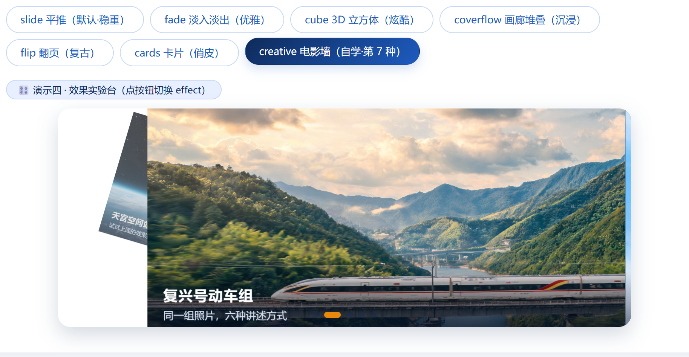
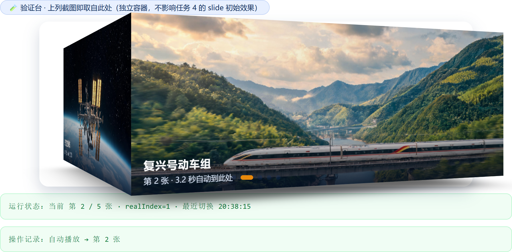
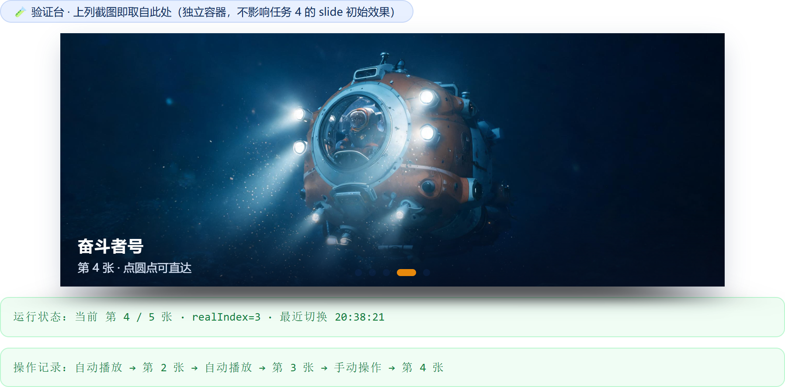
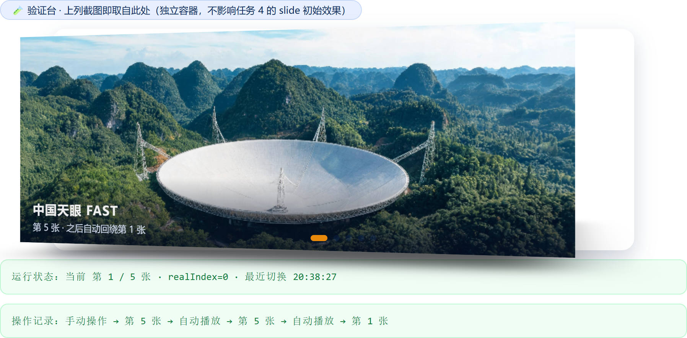
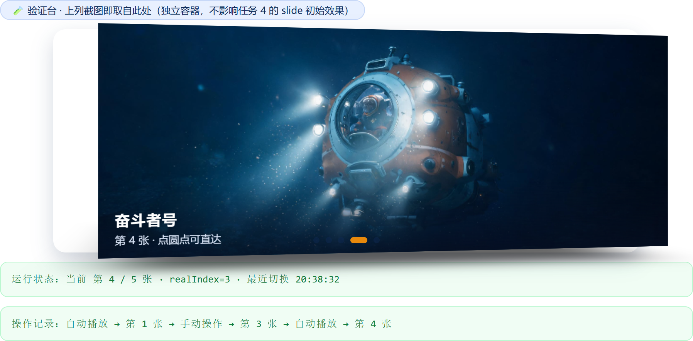

Swiper 轮播组件 · 大国重器光影展（学生版）
HTML 骨架和 CSS 样式已经全部搭好，图片也备齐了——但这个页面的轮播一个都不会动！ 因为所有 <script> 里的 JS 初始化代码都被抽走了。你的任务：把 4 个轮播全部"救活"。
① Swiper 组件库已通过 CDN 引入（页面第 8、9 行），不需要再写引入代码；
② 每个"演示台"下面的绿色卡片就是该任务的要求，JS 代码统一写在页面最底部的
<script> 区域内；③ 每完成一个任务就刷新页面验证：能拖、能点、会自己翻，才算通过；
④ 控制台（F12）报错是你要最好的朋友——先读报错，再改代码。
救活最小轮播三行 JS · 让照片可以拖动
下面是"最小轮播"骨架：三层结构齐全，但因为没有初始化，照片僵在第一张。请写出初始化代码，让它至少可以按住拖动。
✍️ 任务 1 要求
在页面底部 <script> 中初始化 #wySw1，让它成为可拖动的轮播（最基础写法，一个空配置对象即可）。

天宫空间站
2022 年全面建成 · 中国人的太空家园

复兴号动车组
350 km/h · 世界商业运营最高时速

奋斗者号
10909 米 · 触碰地球第四极马里亚纳海沟

中国天眼 FAST
500 米口径 · 世界最大单口径射电望远镜
装上遥控器pagination 圆点 + navigation 箭头
HTML 里已经埋好了三个"遥控器"元素：#wyPag2（圆点）、#wyPrev2 / #wyNext2（左右箭头）。请通过配置让它们"通电"。
✍️ 任务 2 要求
初始化 #wySw2，实现 4 个效果：① 无缝循环（loop）② 切换动画时长 600 毫秒（speed）③ 圆点分页器且可点击跳转（pagination，别漏 el）④ 两侧箭头可切换（navigation）。
天宫空间站
三舱结构 · 神舟乘组常年值守
复兴号动车组
京张高铁智能驾驶 · 百年京张到智能京张
奋斗者号
坐底万米 · 深海探测进入"中国时代"
中国天眼 FAST
南仁东先生 22 年铸就的观天巨目
让它自己翻页autoplay 自动播放 + loop 无缝续播
网页 Banner 最常见的形态：自己会翻页。autoplay.delay 控制每张停留的毫秒数，disableOnInteraction: false 表示用户手动滑动之后自动播放不停止。
✍️ 任务 3 要求
初始化 #wySw3，实现：① 循环播放 ② 每 2.6 秒自动翻页 ③ 用户拖动之后自动播放继续 ④ 保留底部圆点分页器（#wyPag3）。
天宫空间站
巡天遥看一千河
复兴号动车组
中国速度 · 风驰电掣
奋斗者号
万米深潜 · 无畏探索
中国天眼 FAST
仰望星空 · 脚踏实地
六种效果随心换effect 参数 + 进阶：按钮实时切换
改一个 effect 参数，轮播立刻换一种"性格"：slide / fade / cube / coverflow / flip / cards。上面的 7 个按钮已经绑好了点击事件（读取 btn.dataset.fx），JS 还需要你补两段。
✍️ 任务 4 要求
基础分：初始化 #wySw4，实现循环 + 自动播放（3.2 秒）+ 圆点分页器（#wyPag4），初始效果为 'slide'，动画时长 800 毫秒。
进阶分：补全按钮点击事件中的 TODO——实现点击按钮切换效果。提示：Swiper 动态换 effect 不能只改参数，需要先销毁旧实例再重建（destroy + new）。
⭐ 验证标准：基础分——轮播自动翻页；进阶分——点 cube 按钮变 3D 立方体、点 fade 变淡入淡出天宫空间站
试试上面的效果按钮
复兴号动车组
同一组照片，六种讲述方式
奋斗者号
游戏网站爱用 cube
中国天眼 FAST
相册页面爱用 coverflow
任务二 · creative 电影墙：课堂没讲，自己学会读官方示例 257-effect-creative.html → 追加演示四第 7 个按钮
课堂上只讲了 6 种 effect，Swiper 还有第 7 种 creative（自由 3D 变换）。我先读官方示例 swiper/demo/257-effect-creative.html，再让 AI 讲清 creativeEffect 的 transform 写法，最后给演示四加上第 7 个按钮「creative 电影墙」。
共同规律：translate 决定卡片的左右位移与远近（Z 越小越远），rotate 是 [X, Y, Z] 三个轴的旋转角度，scale / opacity / shadow / origin 负责缩放、透明度、投影与旋转支点。
我的提问：creativeEffect 里 prev 和 next 的两套 transform，分别作用在哪一张幻灯片上？我要求“上一张缩小左移带角度、下一张放大右移进场”，该怎么写？
AI 回答要点：两套 transform 描述的是非当前张的“停靠位姿”，而不是当前张。next 描述当前张右侧、还没进场的那一张的位姿；prev 描述左侧、已经翻过去的那一张的位姿。翻页时，原本处在 next 位姿的卡片会切到居中，翻出去的卡片则落到 prev 位姿，所以同一张卡片在两个角度间过渡，就形成了 3D 推进感。
Q1：transform 里的百分号相对谁？相对轮播容器（.swiper）自身的宽 / 高，不是幻灯片、也不是浏览器视口。所以 translate: ['100%', 0, 0] 正好等于“推出一屏宽”，不同尺寸的容器换行时无需改数字。
Q2：改一个数值让卡片转 20 度？把 rotate 的第三个值（Z 轴）改成 20：rotate: [0, 0, 20]。本页「creative 电影墙」用的正是这一组参数，右侧截图里左侧那张卡片就是倾斜 20° 的样子。
效果截图 · 点第 7 个按钮「creative 电影墙」后抓拍的翻页瞬间

任务三 · 综合创作：第六件展品 + parallax 视差AI 出图 · 超纲能力自学 · 技术答辩 ⭐⭐⭐
两件事：① 为光影展加上第六件展品「爱达·魔都号」（首艘国产大型邮轮，2024 年 1 月商业首航），配图由 AI 生成（16:9 横版），slide 结构完整；② 额外启用一个课堂没讲过的 Swiper 能力——本次选 parallax 视差，让图片与标题按不同速度移动。
Website gallery slide image, wide 16:9 photorealistic: the Chinese-built large cruise ship "Adora Magic City" sailing on the open sea at golden hour, gleaming white multi-deck hull with vivid red and blue hull art, long bow wake, calm deep-blue ocean, warm sunset sky, cinematic wide-angle shot, professional maritime photography
AI 返回 2560×1440 横版写实图（白船体、红蓝涂装、金色海面），与其余五件展品的摄影风格统一，保存为 swiper-imgs/adora_1.jpg 并放入演示三第 6 个 slide，含 img + wy-cap（h3 + p） 完整结构。
我的提问：课堂没讲过 parallax。我只想在演示三里让图片和标题以不同速度移动，最少要改哪些地方？
AI 第一版（不对）：只回了一句“在配置里加 parallax: true 就有效果”。我照做后页面毫无变化——配置只负责“开启”视差模块，真正的位移量写在 HTML 元素的 data-swiper-parallax 属性上，没有属性就没有可移动的目标。
我的追问：开启后完全没有位移，是不是缺 data 属性？图片和标题要分开动，数值该给多少？
AI 第二版（改对）：图片给 data-swiper-parallax="-200" + data-swiper-parallax-scale="1.2"，标题给 -90；数值越大位移越远，两者差值形成景深。
Q1 这段代码什么意思？parallax: true 打开视差模块；翻页时 Swiper 按每张卡的进度，把带 data-swiper-parallax 的元素横向平移（-200 即反向 200px），-scale 让图片由 1 放大到 1.2 倍，标题只移 90px——图快字慢，形成纵深。
Q2 AI 第一次给的哪里不对、你改了什么？只给了 parallax: true，漏掉 slide 上的 data 属性，页面纹丝不动；我在每张 slide 的 img 与标题上补齐了位移属性。
Q3 新参数的作用？data-swiper-parallax 控制位移距离与方向（负值反向）；data-swiper-parallax-scale 控制图片随进度的缩放；两者叠加就是“前景图片快速掠过、后景文字缓慢跟随”。
Q4 现场把 delay 改成指定值并解释预期变化？在下方实验区改成 4000：每张停留由 2.6 秒变 4 秒，翻页明显变慢；改 1000 则每秒一翻、来不及看清内容。要点是改完要 autoplay.stop() 再 start()，新值才立即生效。
现场实验 · 修改演示三的 delay（对应答辩 Q4）
效果截图 · 第六件展品「爱达·魔都号」
任务一 · 提示词工程师：让 AI 听懂需求两轮提示词迭代 + 逐项截图验证
本任务不写代码、只写提示词：把需求「① 无缝循环 ② 3.2 秒自动翻页且手动操作后不停止 ③ 圆点分页器可点击 ④ 初始效果 cube」翻译给 AI，并对 AI 两轮生成的 new Swiper('#wySw4', {...}) 配置逐项实测。
请用 Swiper 11 为 id 是 wySw4 的轮播写初始化代码，要求：无缝循环、3.2 秒自动翻页、底部圆点分页器、初始效果 cube、切换动画 800 毫秒。
❌ 实测两处不合格：① autoplay 未写 disableOnInteraction: false，默认 true，用户一拖动自动播放就永久停止；② pagination 未写 clickable: true，圆点只能看不能点。
在上一版基础上只改两处：① autoplay 内补 disableOnInteraction: false，保证用户手动拖动后自动播放继续；② pagination 内补 clickable: true，让圆点可点击跳转。其余配置（loop、speed、effect、delay）保持不变，只输出完整代码。
✅ 第二版四项需求全部落位：loop 无缝循环、delay 3200 + disableOnInteraction: false 手动后仍自动、clickable 圆点可点、effect 初始 cube。
实测验证 · 五项需求逐一截图（截图均来自下方验证台）




天宫空间站
第 1 张 · cube 立方体
复兴号动车组
第 2 张 · 3.2 秒自动到此处
奋斗者号
第 4 张 · 点圆点可直达
中国天眼 FAST
第 5 张 · 之后自动回绕第 1 张
答辩自述：第一版提示词只说了「自动翻页」「圆点分页器」，没点明 Swiper 的两个默认值陷阱——disableOnInteraction 默认 true 会停、clickable 默认 false 不可点；第二版把这两条显式写成「补什么参数、达到什么行为」，AI 才给对。